|
Kang Zhang
I am a doctoral student in the integrated Master's/Ph.D. program in the School of Electrical Engineering at KAIST, where I have been studying since 2021. I am a member of the Multimodal AI Lab, advised by Professor Joon Son Chung.
I received my B.S. in Electronics and Information Engineering from Harbin Institute of Technology (HIT), where I worked with Professor Sheng Chang Lan on mmWave radar-based hand gesture recognition.
I am also interning at Huawei from January 2026 to July 2026.
Email /
Scholar /
Github
|
|
Research
I'm interested in computer vision, deep learning, generative AI, and audio processing. * denotes equal contributions.
|
|
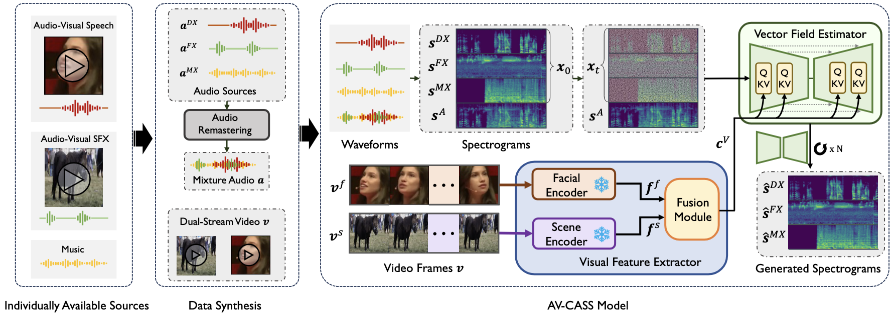
|
Cinematic Audio Source Separation Using Visual Cues
Kang Zhang*, Suyeon Lee*, Arda Senocak, Joon Son Chung
CVPR, 2026
paper /
project /
code
|
|
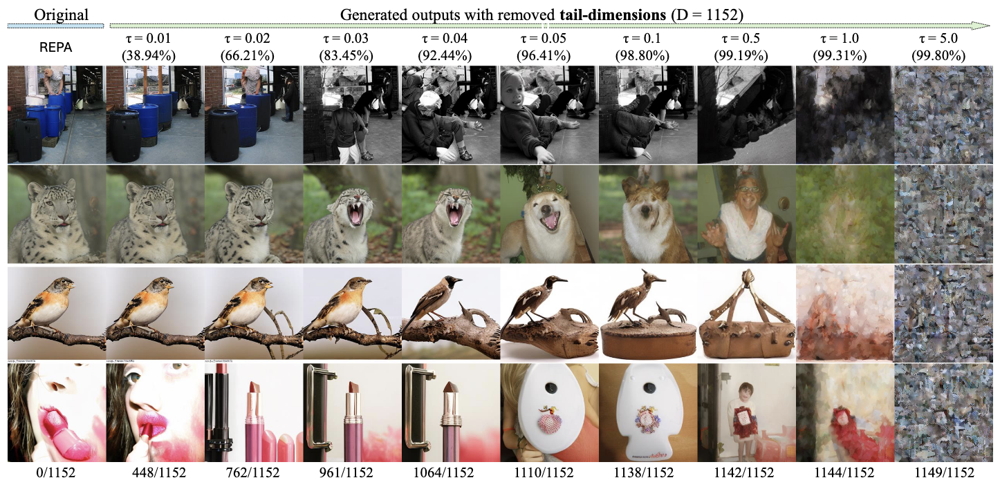
|
A Hidden Semantic Bottleneck in Conditional Embeddings of Diffusion Transformers
Trung X Pham, Kang Zhang, Ji Woo Hong, Chang D. Yoo
ICLR, 2026
|
|
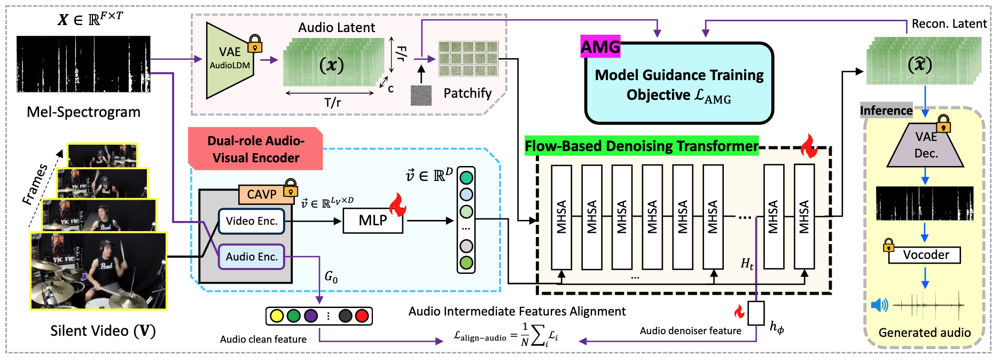
|
Model-Guided Dual-Role Alignment for High-Fidelity Open-Domain Video-to-Audio Generation
Kang Zhang*, Trung X Pham*, Suyeon Lee, Axi Niu, Arda Senocak, Joon Son Chung
Neurips, 2025
We present MGAudio, a novel flow-based framework for open-domain video-to-audio generation, which introduces model-guided dual-role alignment as a central design principle. Unlike prior approaches that rely on classifier-based or classifier-free guidance, MGAudio enables the generative model to guide itself through a dedicated training objective designed for video-conditioned audio generation.
|
|
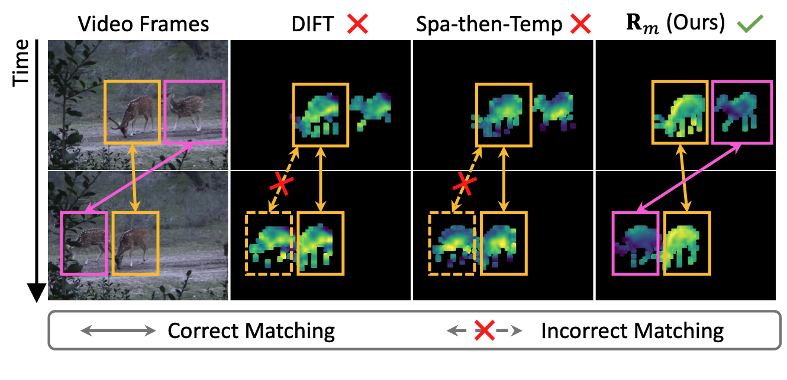
|
Video Diffusion Models Excel at Tracking Similar-Looking Objects Without Supervision
Chenshuang Zhang, Kang Zhang, Joon Son Chung, In So Kweon, Junmo Kim, Chengzhi Mao
Neurips, 2025
We propose a self-supervised tracker that leverages motion representations inherently learned by pre-trained video diffusion models during early denoising, enabling robust distinction of visually similar objects and achieving up to 6-point improvements over prior methods on benchmarks and new tests.
|
|
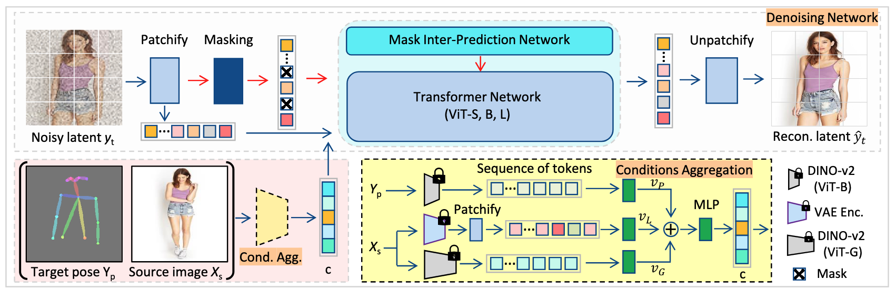
|
Cross-view Masked Diffusion Transformers for Person Image Synthesis
Trung X Pham*, Kang Zhang*, Chang D Yoo
ICML, 2024
code
We present X-MDPT, a novel diffusion model designed for pose-guided human image generation. X-MDPT distinguishes itself by employing masked diffusion transformers that operate on latent patches, a departure from the commonly-used Unet structures in existing works.
|
|
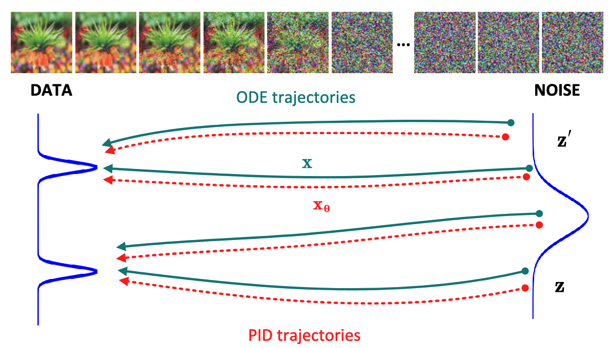
|
Physics informed distillation for diffusion models
Joshua Tian Jin Tee*, Kang Zhang*,, Hee Suk Yoon, Dhananjaya Nagaraja Gowda, Chanwoo Kim, Chang D Yoo
TMLR, 2024
code
We introduce Physics Informed Distillation (PID), which employs a student model to represent the solution of the ODE system corresponding to the teacher diffusion model, akin to the principles employed in PINNs.
|
|
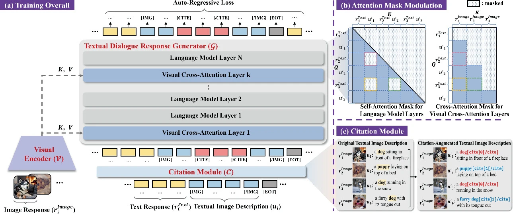
|
Bi-mdrg: Bridging image history in multimodal dialogue response generation
Hee Suk Yoon, Eunseop Yoon, Joshua Tian Jin Tee, Kang Zhang, Yu-Jung Heo, Du-Seong Chang, Chang D Yoo
ECCV, 2024
We propose BI-MDRG that bridges the response generation path such that the image history information is utilized for enhanced relevance of text responses to the image content and the consistency of objects in sequential image responses.
|
|
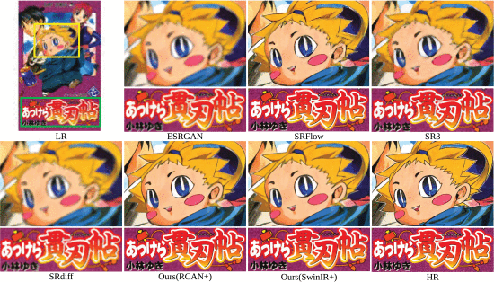
|
ACDMSR: Accelerated conditional diffusion models for single image super-resolution
Axi Niu, Trung X Pham, Kang Zhang, Jinqiu Sun, Yu Zhu, Qingsen Yan, In So Kweon, Yanning Zhang
IEEE Transactions on Broadcasting, 2024
To speed up inference and further enhance the performance, our research revisits diffusion models in image super-resolution and proposes a straightforward yet significant diffusion model-based super-resolution method called ACDMSR.
|
|
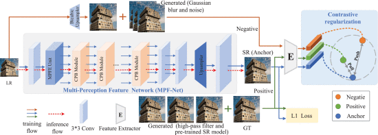
|
Learning from multi-perception features for real-word image super-resolution
Axi Niu, Kang Zhang, Trung X Pham, Pei Wang, Jinqiu Sun, In So Kweon, Yanning Zhang
IEEE Transactions on Circuits and Systems for Video Technology, 2024
Actual image super-resolution is an extremely challenging task due to complex degradations existing in the image. To solve this problem, two dominant methodologies have emerged: degradation-estimation-based Addressing actual image super-resolution remains a formidable challenge due to the intricate degradations present in images.
|
|
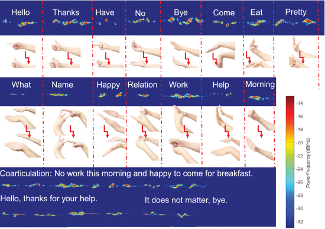
|
Applying mmWave radar sensors to vocabulary-level dynamic Chinese sign language recognition for the community with deafness and hearing loss
Shengchang Lan, Linting Ye, Kang Zhang
IEEE Sensors Journal, 2023
To facilitate human computer interaction (HCL) for the community with deafness and hearing loss (D&HL), this article explored the feasibility of recognizing a vocabulary of dynamic Chinese sign language (CSL) based on millimeter-wave (mmWave) radar sensors within the scope of data science.
|
|
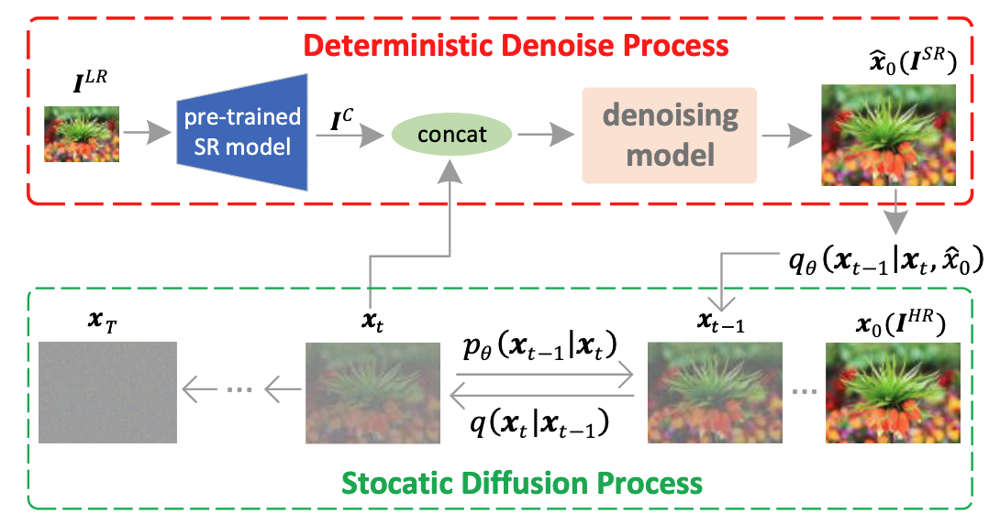
|
Cdpmsr: Conditional diffusion probabilistic models for single image super-resolution
Axi Niu, Kang Zhang, Trung X Pham, Jinqiu Sun, Yu Zhu, In So Kweon, Yanning Zhang
ICIP, 2023
To further improve the performance and simplify current DPM-based super-resolution methods, we propose a simple but non-trivial DPM-based super-resolution post-process framework i.e. cDPMSR.
|
|
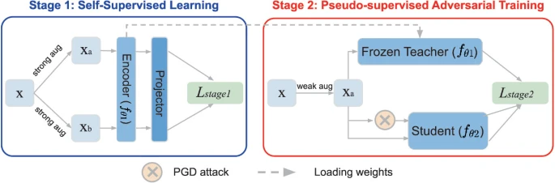
|
Decoupled adversarial contrastive learning for self-supervised adversarial robustness
Chaoning Zhang*, Kang Zhang*, Chenshuang Zhang, Axi Niu, Jiu Feng, Chang D Yoo, In So Kweon
ECCV, 2022
code
This work discards prior practices of directly introducing AT to SSL frameworks and proposed a two-stage framework termed Decoupled Adversarial Contrastive Learning (DeACL).
|
|
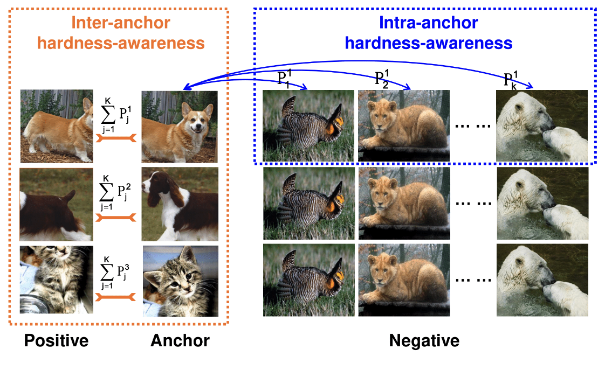
|
Dual temperature helps contrastive learning without many negative samples: Towards understanding and simplifying moco
Chaoning Zhang*, Kang Zhang*, Trung X Pham, Axi Niu, Zhinan Qiao, Chang D Yoo, In So Kweon
CVPR, 2022
supplement /
code
We point out that InfoNCE loss used in MoCo implicitly attract anchors to their corresponding positive sample with various strength of penalties and identify such inter-anchor hardness-awareness property as a major reason for the necessity of a large dictionary. Our findings motivate us to simplify MoCo v2 via the removal of its dictionary as well as momentum.
|
|
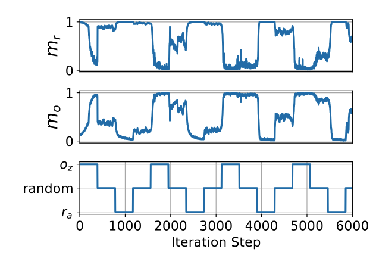
|
How does SimSiam avoid collapse without negative samples? Towards a unified understanding of progress in SSL
Chaoning Zhang*, Kang Zhang*, Chenshuang Zhang, Trung X. Pham, Chang D. Yoo, In So Kweon
ICLR, 2022
We introduce vector decomposition for analyzing the collapse based on the gradient analysis of the l2-normalized representation vector.
|
|
|
On the effect of training convolution neural network for millimeter-wave radar-based hand gesture recognition
Kang Zhang, Shengchang Lan, Guiyuan Zhang
Sensors, 2021
The purpose of this paper was to investigate the effect of a training state-of-the-art convolution neural network (CNN) for millimeter-wave radar-based hand gesture recognition (MR-HGR).
|
|
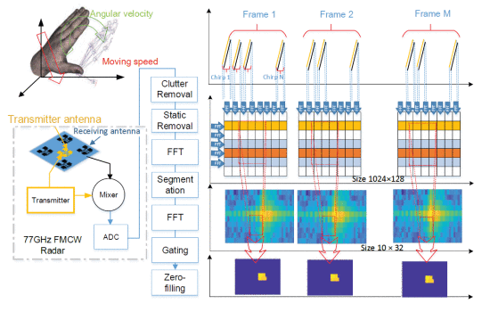
|
Temporal-range-doppler features interpretation and recognition of hand gestures using MmW FMCW radar sensors
Guiyuan Zhang, Shengchang Lan, Kang Zhang, Linting Ye
European conference on antennas and propagation (EuCAP), 2020
Two optimal types of deep neural networks, 3D-CNN and CNN-LSTM are respectively constructed to reveal the temporal gesture motion signatures encoded in multiple adjacent radar chirps.
|
|
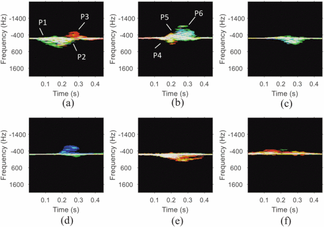
|
Mining spatio-temporal features from mmW radar echoes for hand gesture recognition
Kang Zhang, Shengchang Lan, Guiyuan Zhang
IEEE Asia-Pacific Microwave Conference (APMC), 2019
We use the 77GHz millimeter wave radar to extract the time variation characteristics of the Doppler frequency of the gesture.
|
|
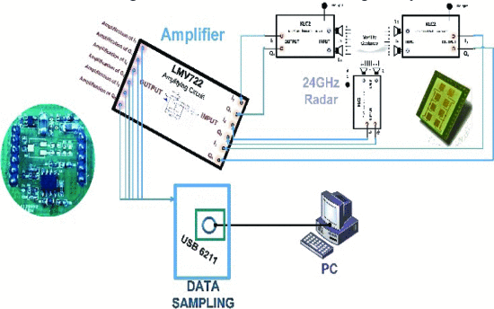
|
Implementation of C4. 5 decision tree in Human Gesture Recognition based on Doppler radars
Guiyuan Zhang, Kang Zhang, Yihan Yun, Gang Lu, Shengchang Lan
International Symposium on Antennas and Propagation (ISAP), 2019
We investigate the feasibility of using a three-dimensional Doppler-radar array at 24GHz to recognize human gestures with a model consisted of ten classical gestures.
|
|
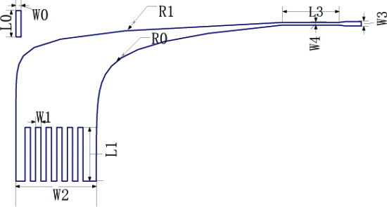
|
A Modified Vivaldi Antenna with Low Self-reflectivity for Bone Health Detection
Gang Lu, Shengchang Lan, Kang Zhang, Lijia Chen, Weichu Chen
IEEE International Symposium on Antennas and Propagation and USNC-URSI Radio Science Meeting, 2019
A modified Vivaldi antenna with low self-reflectivity working at 1-4 GHz is designed to improve the radiation gain by opening rectangular grooves and loading parasitic patches on the surface of the radiating patch.
|
|
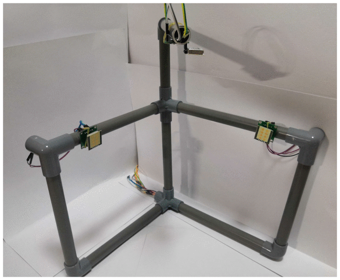
|
A Real-time Hand Gesture Recognition System using 24 GHz Radar Array
Guiyuan Zhang, Kang Zhang, Shengchang Lan, Yuanxun Liu, Lijia Chen
USNC-URSI Radio Science Meeting (Joint with AP-S Symposium), 2019
This paper presents a description of a real-time hand gesture recognition system.
|
This website is based on the template by Jon Barron.
|
|